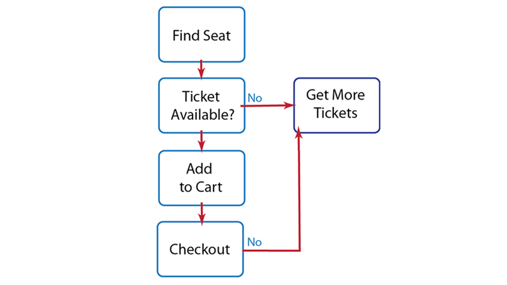
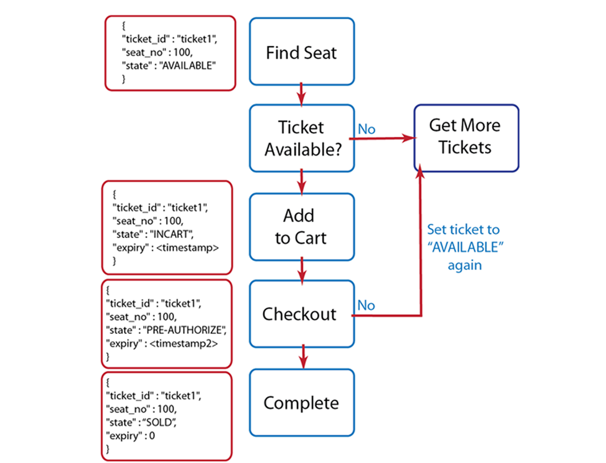
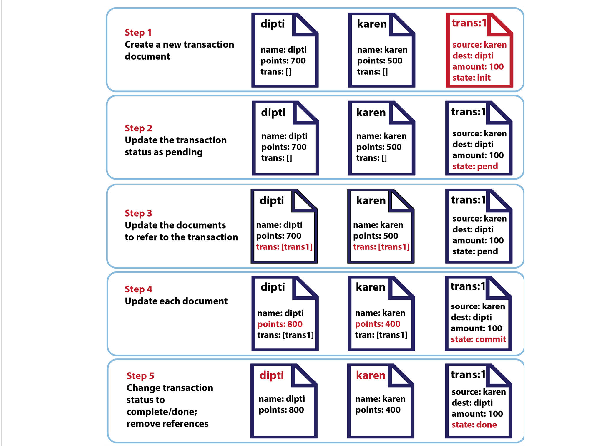
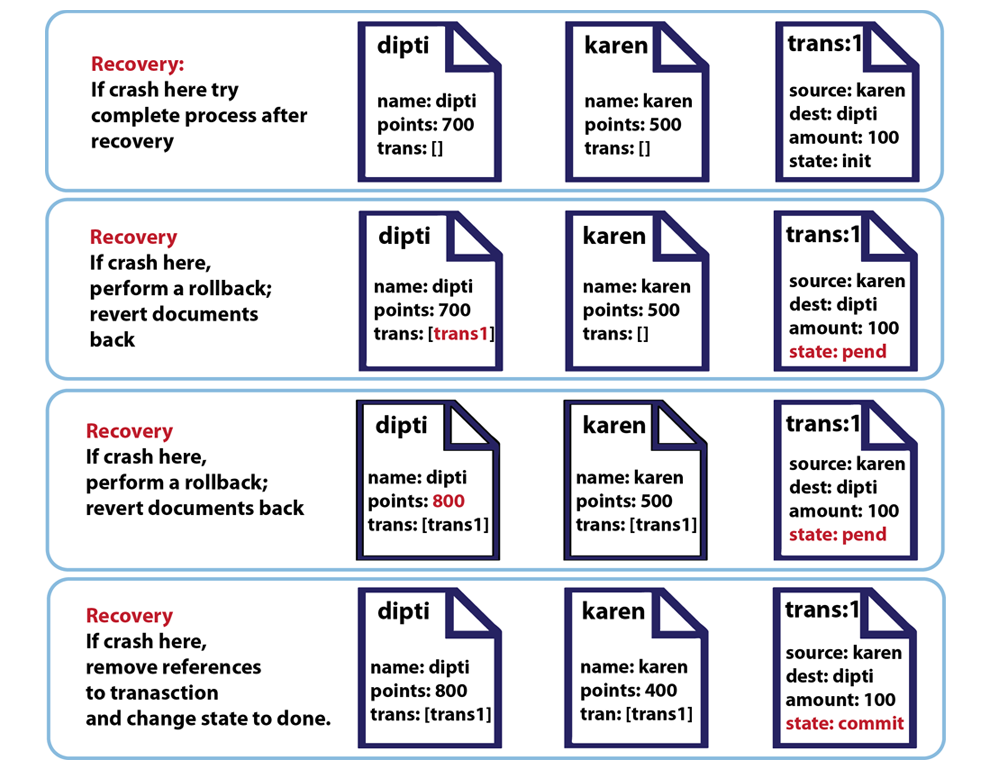

Providing transactional logic
In Modeling documents we discuss much more in depth the advantages you gain when you use JSON documents with Couchbase Server; we also discuss when you might want to use more than one document to represent an object. Here we want to discuss how to perform operations on data across one or more documents while providing some reliability and consistency. In traditional relational database systems, this is the concept of database concept of ACIDity:
-
Atomicity means that if a transaction fails, all changes to related records fail and the data is left unchanged.
-
Consistency means data must be valid according to defined rules, for instance you cannot delete a blog post without also deleting all of the related comments.
-
Isolation means that concurrent transactions would create the same data as if that transactions were executed sequentially.
-
Durability means that once the transaction completes, the data changes survive system failure.
Relational databases will typically rely on locking or versioning data to provide ACID capabilities. Locking means the database marks data so that no other transactions modify it until the first transaction succeeds; versioning means the database provides a version of the data that existed before one process started a process.
NoSQL databases generally do not support transactions in the traditional way used by relational databases. Yet there are many situations where you might want to use Couchbase Server to build an application with transactional logic. With Couchbase Server you can generally improve the reliability, consistency, and isolation of related commits by 1) providing ‘leases’ on information, which reserves the document for use by a single process, or 2) by performing two-phase commits on multiple documents.
Using a lease-out pattern
When you use this web application pattern, you ‘lease-out’ information, or in other words, reserve a document for use by a single process. By doing so, you manage any conflicts with any other processes that my attempt to access the document. Imagine you want to build an online ticketing system that meets the following rules:
-
All seats being ticketed are unique; no two seats are the same.
-
A user can purchase a ticket once the system guarantees a seat.
-
A user might not complete a ticket purchase.
-
The ticket should be available to the user at checkout.
To fulfill these requirements, we can use these techniques:
-
Document Model: Provide one document per ticket.
-
Lease/Reserve: Implement a lease for tickets. Once a user chooses a seat, we reserve the ticket and a user has 5 minutes to purchase it.
-
Manage States, and Compensate: A seat can be made available again; expired tickets can be offered once again. If there are failures when a ticket is in an intermediate state, the system can compensate.
The following diagram shows the basic application process flow:
The initial stage of our ticket document, as JSON, would appear as follows:
{
"ticket_id" : "ticket1",
"seat_no" : 100,
"state" : "AVAILABLE"
}
The ticket document has an unique id, an associated seat, and an explicit state field to store that state of our ticket transaction. We can use this information in our application logic to ensure no other process tries to reserve the seat. We can also use this information to roll-back the ticket to an initial state. Imagine a user searches for open seats, and then they want a seat that is unavailable. Our system can get all the tickets that were requested but not purchased by other users; these will all be tickets with expired leases. So we can also use this information to reserve seats and return seats to a pool of available seats that we offer to users. If a user selects an open seat, we put the ticket in their shopping cart, and indicate this in the ticket document:
{
"ticket_id" : "ticket1",
"seat_no" : 100,
"state" : "INCART",
"expiry" : <timestamp>
}
Notice that when we update the state of the ticket, we also provide an expiration. The expiry in this case is 5 minutes, and serves as the lease, or time hold that is in place on the ticket so that no other processes can modify it during that period. The user now has 5 minutes to pay for the ticket. If a user moves forward with the purchase, our application should then get each ticket in the user cart from Couchbase Server and test that the tickets in the user shopping cart have not expired. If the ticket lease has not expired, we update the state to PRE-AUTHORIZE:
{
"ticket_id" : "ticket1",
"seat_no" : 100,
"state" : "PRE-AUTHORIZE",
"expiry" : <updated_timestamp>
}
Note at this phase we also update the timestamps to 5 minutes once again; this provides the additional time we may need to authorize payment from a credit card, or get an electronic payment for the ticket. If the payment fails, for instance the credit card is not authorized, we can reset the tickets to the state AVAILABLE. Our system will know that the ticket can be returned to the pool of available tickets that we present to users. If the payment succeeds, we then set the ticket state to SOLD and set the expiration to 0:
{
"ticket_id" : "ticket1",
"seat_no" : 100,
"state" : "SOLD",
"expiry" : 0
}
So we set the expiration explicitly to 0 to indicate the ticket has no expiration since it is sold. We keep the document in the system so that the user can print it out, and as a record until the actual event is over. Here is the process once again, this time we also demonstrate the state changes which keep track of the ticket along with the application flow:
This diagram shows some of the compensation mechanisms we can put in place. If the seat that a user selects is not AVAILABLE we can reset all the tickets that are expired to AVAILABLE and retrieve them for the user. If the user fails to complete the checkout, for instance their credit card does not clear, we can also reset that ticket state to AVAILABLE so that it is ready to retrieve for other users. At each phase of the user interaction, we keep track of the ticket state so that it is reserved for checkout and payment. If the system fails and the ticket is persisted, we can retrieve that state and return the user to the latest step in the purchase they had achieved. Also by preserving the ticket state and expiration, we withhold it from access and changes by other users during the payment process.
An alternate approach you can use with this same pattern is to have a ticketing system that offers a fixed number of general admission tickets. In this case, we can use lazy expiration in Couchbase Server to remove all the tickets once the event has already passed.
Performing two-phase commits
For traditional relational databases, we can store information for an object in one or more tables. This helps us from having a lot of duplicate information in a table. In the case of a document database, such as Couchbase Server, we can store the high level information in a JSON document and store related information in a separate JSON documents.
This leads to the challenge of transactions in document-based databases. In relational databases, you are able to change both the blog post and the comments in a single transaction. You can undo all the changes from the transaction via rollback, ensure you have a consistent version of the data during the transaction, or in case of system failure during the transaction, leave the data in a state that is easier to repair.
The Ruby and PHP examples we describe here plus two slightly more complex versions are available on Github:
-
Ruby class to represent the two-phase commit, including counters.
-
PHP Advanced Transaction, includes checks, JSON helpers, encapsulation, and counters.
The following approach we illustrate below is still an optimistic approach that assumes we can recover correct information about the two-phase commit state from the server after failure. It is possible that a system failure occurs and the information is not yet persisted, and therefore information used to rollback a transaction is not adequate. As of Couchbase Server 2.0+ we provide new functionality in the observe() command which enables you to find out whether an item is persisted or not. This provides better assurance for you that a commit state is accurate so you can perform any required rollbacks.
The second major caveat for this approach is that if you perform this across thousands of documents or more, you may have a larger number of remaining documents which represent the transfers. We suggest you delete documents representing transfers is an orderly way, otherwise you will have a larger number of stale, pending documents.
You should only use these patterns in production only after you test your application in all failure scenarios; for data that requires the highest level of integrity and reliability, such as cash balances, you may want to use a traditional database which provides absolute guarantees of data integrity.
With Couchbase Server, you can generally provide something functional analogous to an atomic transaction by performing a two-phase commit. You follow this approach:
Here is the same approach demonstrated in actual code using the Couchbase Ruby SDK. To view the complete code, as well as a slightly more complex version, see sample two-phase transaction and transfer(). First we start by storing the documents/objects that we want to update. The example below shows how to create the new Couchbase client, and then store two players and their points:
require 'rubygems'
require 'couchbase'
cb = Couchbase.bucket
karen = {"name" => "karen", "points" => 500, "transactions" => []}
dipti = {"name" => "dipti", "points" => 700, "transactions" => []}
# preload initial documents
cb.set("karen", karen)
cb.set("dipti", dipti)
We then create a third record that represents the transaction between the two objects:
# STEP 1: prepare transaction document
trans = {"source" => "karen", "destination" => "dipti", "amount" => 100, "state" => "initial"}
cb.set("trans:1", trans)
Then we set the transfer state to pending, which indicates the transfer between karen and dipti is in progress. Notice in this case we do this in a begin..rescue block so that we can perform a rollback in the rescue in case of server/system failure.
Next in our begin..rescue block we refer the two documents we want to update to the actual transfer document. We then update the amounts in the documents and change the transfer status to committed :
begin
# STEP 2: Switch transfer into pending state
cb.cas("trans:1") do
trans.update("state" => "pending")
end
# STEP 3 + 4: Apply transfer to both documents
cb.cas("karen") do |val|
val.update("points" => val["points"] - 100,
"transactions" => val["transactions"] + ["trans:1"])
end
cb.cas("dipti") do |val|
val.update("points" => val["points"] + 100,
"transactions" => val["transactions"] + ["trans:1"])
end
# STEP 4: Switch transfer document into committed state
cb.cas("trans:1") do |val|
val.update("state" => "committed")
end
In this case we have combined both steps 3 and 4 into three CAS operations: one operation per document. In other words, we update the documents to refer to the transfer, and we also update their points. Depending on your programming languages, it may be easier to combine these two, or keep them separate updates.
For this last step in the begin..rescue block we change remove the two references from the player documents and update the transfer to be done.
# STEP 5: Remove transfer from the documents
cb.cas("karen") do |val|
val.update("transactions" => val["transactions"] - ["trans:1"])
end
cb.cas("dipti") do |val|
val.update("transactions" => val["transactions"] - ["trans:1"])
end
# STEP 5: Switch transfer into done state
cb.cas("trans:1") do |val|
val.update("state" => "done")
end
To perform the rollback, we had placed all of our update operations in a begin..rescue..end block. If there are any failures during the begin block, we will execute the rescue part of the block. In order to undo the transfer when it is left in a particular state, we have a case statement to test whether the transfer failed at a pending, commit, or done status:
rescue Couchbase::Error::Base => ex
# Rollback transaction
trans = cb.get("trans:1")
case trans["state"]
when "committed"
# Create new transaction and swap the targets or amount sign.
# The code block about could be wrapped in the method something like
#
# def transfer(source, destination, amount)
# ...
# end
#
# So that this handler could just re-use it.
when "pending"
# STEP 1: Switch transaction into cancelling state
cb.cas("trans:1") do |val|
val.update("state" => "cancelling")
end
# STEP 2: Revert changes if they were applied
cb.cas("karen") do |val|
break unless val["transactions"].include?("trans:1")
val.update("points" => val["points"] + 100,
"transactions" => val["transactions"] - ["trans:1"])
end
cb.cas("dipti") do |val|
break unless val["transactions"].include?("trans:1")
val.update("points" => val["points"] - 100,
"transactions" => val["transactions"] - ["trans:1"])
end
# STEP 3: Switch transaction into cancelled state
cb.cas("trans:1") do |val|
val.update("state" => "cancelled")
end
end
# Re-raise original exception
raise ex
end
As the comments in the code note, it may be most useful to put the entire transfer, including the rollback into a new transfer method. As a method, it could include a counter, and also take parameters to represent the documents updated in a transfer. This variation also uses a cas value with update to rollback the transfer; this is to avoid the unintended risk of rewriting the entire transfer document. To see the complete sample code provided above, as well as a Ruby variation which includes the code as a transfer() method, see sample two-phase transaction and transfer().
This next illustration shows you the diagram we initially introduced to you at the start of this section. but this we update it to show when system failures may occur and the rollback scenario you may want to provide. Depending on the programming language that you use, how you implement the rollbacks may vary slightly:
The next example demonstrates a transaction using the PHP SDK; as in the Ruby example provided above, we follow the same process of creating a separate transfer document to track the state of our changes. To see the example we illustrate above, as well as the alternate class, see Two-Phase PHP Couchbase Commit and Advanced Two-Phase PHP Couchbase Commit
In this case we provide the functionality within a single exception class which manages the commits as well as the possible rollback cases based on errors. First we establish some base elements before we actually set any documents
Here we create our Transaction class which will throw an error if any issues arise as we try to perform our transaction. We then provide a public method, transfer() which we can use to retrieve the documents and decode the JSON. We can provide parameters to this method that specify the document from which we remove points, also known as the source document, and the document to which we add points, also known as the destination document. We can also provide the client instance and the amount of the transaction as parameters. We will use the client instance as our connection to the server. Within the transfer() function we try to create and store the new document which represents the actual transfer:
<?php
class TransactionException extends RuntimeException {}
function transfer($source, $destination, $amount, &$cb) {
$get = function($key, $casOnly = false) use (&$cb) {
$return = null;
$cb->getDelayed(array($key), true, function($cb, $data) use(&$return, $casOnly) {
$return = $casOnly ? $data['cas'] : array(json_decode($data['value'], true), $data['cas']);
});
return $return;
};
if($cb->get('transaction:counter') === null) {
$cb->set('transaction:counter', 0);
}
$id = $cb->increment('transaction:counter', 1);
$state = 'initial';
$transKey = "transaction:$id";
$transDoc = compact('source', 'destination', 'amount', 'state');
$cb->set($transKey, json_encode($transDoc));
$transactionCas = $get($transKey, true);
if(!$transactionCas) {
throw new TransactionException("Could not insert transaction document");
}
The first thing we do is try to retrieve any existing, named document transaction:counter and if it does not exist, create a new one with the default counter of 0. We then increment the id for our transfer and set the state and key. Finally we perform the SDK store operation set() to save the document as JSON to Couchbase Server. In the transfer() function, we use a try..catch block to try to update the transfer to a pending state and throw an exception if we cannot update the state:
In the try block we try to retrieve the stored documents and apply the attributes from the documents provided as parameters. We also provide a reference to the new transfer document in the source and destination documents as we described in our illustration.
We perform compare and swap operations to update the source and destination documents in the try block; if either attempts fail and return false, we raise an exception. We then update the transfer document in Couchbase Server to indicate the commit state is now committed:
try {
$transDoc['state'] = 'pending';
if(!$cb->cas($transactionCas, $transKey, json_encode($transDoc))) {
throw new TransactionException("Could not switch to pending state");
}
list($sourceDoc, $sourceCas) = $get($source);
list($destDoc, $destCas) = $get($destination);
$sourceDoc['points'] -= $amount;
$sourceDoc['transactions'] += array($transKey);
$destDoc['points'] += $amount;
$destDoc['transactions'] += array($transKey);
if(!$cb->cas($sourceCas, $source, json_encode($sourceDoc))) {
throw new TransactionException("Could not update source document");
}
if(!$cb->cas($destCas, $destination, json_encode($destDoc))) {
throw new TransactionException("Could not update destination document");
}
$transDoc['state'] = 'committed';
$transactionCas = $get($transKey, true);
if(!$cb->cas($transactionCas, $transKey, json_encode($transDoc))) {
throw new TransactionException("Could not switch to committed state");
}
Again in the try block we throw an exception if we fail to update the transfer state. We then remove the reference to the transfer for the source and destination documents. At the end of our try we update the transfer document so that it is marked as ‘done’:
list($sourceDoc, $sourceCas) = $get($source);
list($destDoc, $destCas) = $get($destination);
$sourceDoc['transactions'] = array_diff($sourceDoc['transactions'], array($transKey));
$destDoc['transactions'] = array_diff($destDoc['transactions'], array($transKey));
if(!$cb->cas($sourceCas, $source, json_encode($sourceDoc))) {
throw new TransactionException("Could not remove transaction from source document");
}
if(!$cb->cas($destCas, $destination, json_encode($destDoc))) {
throw new TransactionException("Could not remove transaction from destination document");
}
$transDoc['state'] = 'done';
$transactionCas = $get($transKey, true);
if(!$cb->cas($transactionCas, $transKey, json_encode($transDoc))) {
throw new TransactionException("Could not switch to done state");
}
We can now handle any system failures in our transfer() function with exception handling code which looks at the state of our two-phase commit:
} catch(Exception $e) {
// Rollback transaction
list($transDoc, $transCas) = $get($transKey);
switch($transDoc['state']) {
case 'committed':
// create new transaction and swap the targets
transfer($destination, $source, $amount, $cb);
break;
case 'pending':
// STEP 1: switch transaction into cancelling state
$transDoc['state'] = 'cancelling';
$transactionCas = $get($transKey, true);
if(!$cb->cas($transactionCas, $transKey, json_encode($transDoc))) {
throw new TransactionException("Could not switch into cancelling state");
}
// STEP 2: revert changes if applied
list($sourceDoc, $sourceCas) = $get($source);
list($destDoc, $destCas) = $get($destination);
if(in_array($transKey, $sourceDoc['transactions'])) {
$sourceDoc['points'] += $amount;
$sourceDoc['transactions'] = array_diff($sourceDoc['transactions'], array($transKey));
if(!$cb->cas($sourceCas, $source, json_encode($sourceDoc))) {
throw new TransactionException("Could not revert source document");
}
}
if(in_array($transKey, $destDoc['transactions'])) {
$destDoc['points'] -= $amount;
$destDoc['transactions'] = array_diff($destDoc['transactions'], array($transKey));
if(!$cb->cas($destCas, $destination, json_encode($destDoc))) {
throw new TransactionException("Could not revert destination document");
}
}
// STEP 3: switch transaction into cancelled state
$transDoc['state'] = 'cancelled';
$transactionCas = $get($transKey, true);
if(!$cb->cas($transactionCas, $transKey, json_encode($transDoc))) {
throw new TransactionException("Could not switch into cancelled state");
}
break;
}
// Rethrow the original exception
throw new Exception("Transaction failed, rollback executed", null, $e);
}
}
If the transfer is in a indeterminate state, such as ‘pending’ or ‘committed’ but not ‘done’, we flag the document as in the process of being cancelled and then revert the values for the stored documents into their original states. To revert the documents, we use the transfer() method again, but this time we invert the parameters and provide the destination as the source of points and source as the destination of points. This will take away the amount from the destination and revert them back to the source. This final sample code illustrates our new class and transfer() method in action:
$cb = new Couchbase('localhost:8091');
$cb->set('karen', json_encode(array(
'name' => 'karen',
'points' => 500,
'transactions' => array()
)));
$cb->set('dipti', json_encode(array(
'name' => 'dipti',
'points' => 700,
'transactions' => array()
)));
transfer('karen', 'dipti', 100, $cb);
?>
There is also another variation for handling transactions with the Couchbase PHP SDK that relies on helper functions to create the document objects, and to provide the additional option to create a document if it does not exist in Couchbase Server. The sample is slightly more complex, but handles cases where the documents do not already exist in Couchbase Server, and cases where the documents provided as parameters are only partial values to be added to the stored documents. To see the example we illustrate above, as well as the alternate class, see Two-Phase PHP Couchbase Commit and Advanced Two-Phase PHP Couchbase Commit.
Getting and locking
Retrieving information from back end or remote systems might be slow and consume a lot of resources. You can use advisory locks on records in order to control access to these resources. Instead of letting any client access Couchbase Server and potentially overwhelm the server with high concurrent client requests, you could create an advisory lock to allow only one client at a time access the information.
You can create a lock in Couchbase by setting an expiration on specific item and by using the add() and delete() methods to access that named item. The add() and delete() methods are atomic, so you can be assured that only one client will become the advisory lock owner.
The first client that tries to add a named lock item with an expiration timeout will succeed. Other clients will see error responses to an add() command on that named lock item; they will know that some other client owns the named lock item. When the current lock owner is finished owning the lock, it can send an explicit delete() command on the named lock item to free the lock.
If a client that owns a lock crashes, the lock will automatically become available to the next client that requests for lock via add() after the expiration timeout.
As a convenience, several Couchbase SDKs provide get-and-lock as a single operation and single server request. This will accomplish the functional equivalent of adding a lock and deleting it. The following is an example from the Python SDK:
import uuid
key, value = str(uuid.uuid4()), str(uuid.uuid4())
client.set(key, 0, 0, value)
client.getl((key)[2], value)
client.set(key, 0, 0, value)
After we set the key and values to unique strings, we lock the key. The subsequent set() request will fail and return an error.